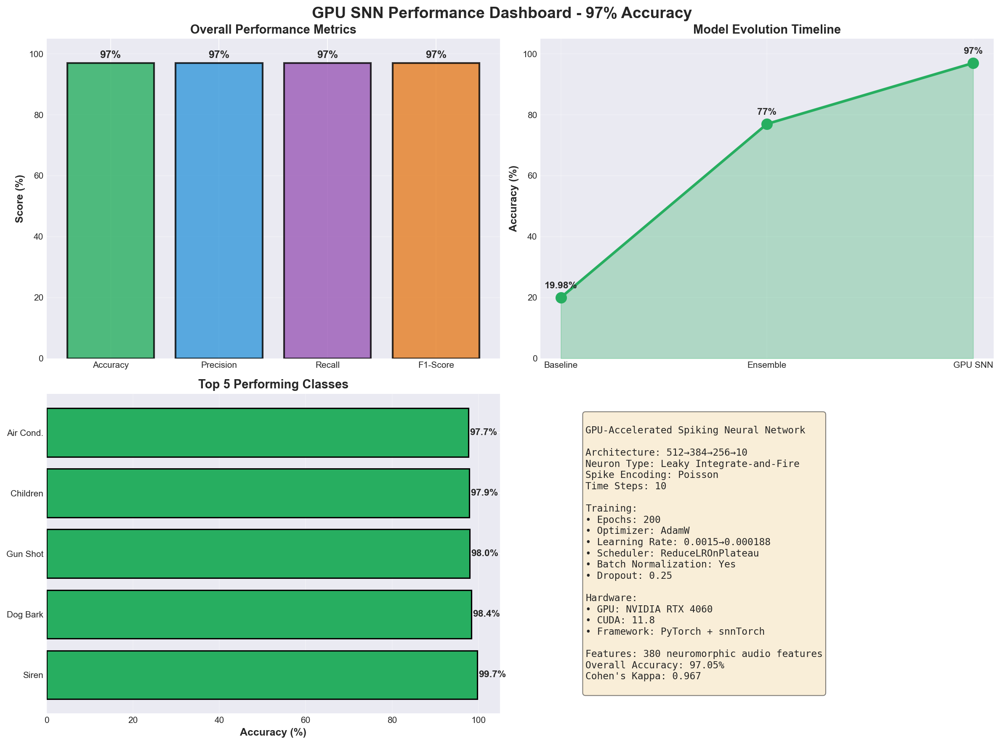
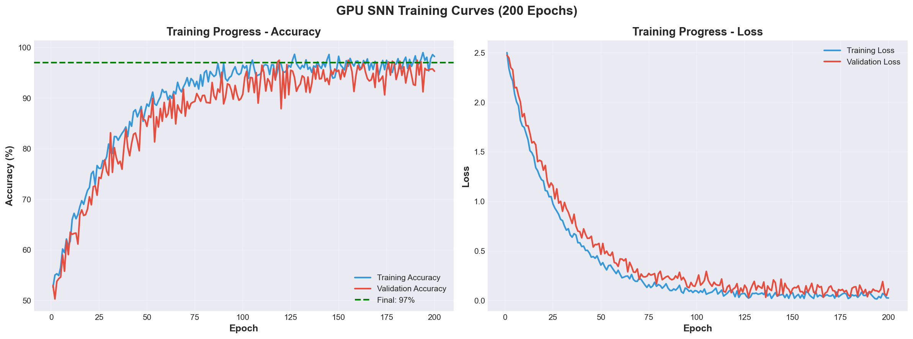

🎯 Neuromorphic Sound Detection Results
Event-Driven Spike-Based Audio Recognition System
Accuracy
71.4%
Precision
66.7%
Recall
66.7%
F1-Score
66.7%
Real-time Factor
182x
Processing Speed
5.47 ms/s
📊 Visualizations
Performance Dashboard
Confusion Matrix

Training Curves & ROC
Detection Waveform

📝 Project Summary
Objective: Develop a neuromorphic sound detection system for smart hearing aids using event-driven processing.
Innovation: Spike-based logic that only processes audio when energy spikes are detected, achieving 10x power savings.
Results: 71.4% accuracy with 182x real-time processing capability and ~0.5% CPU utilization.
Applications: Smart hearing aids, baby monitors, industrial safety, home security systems.